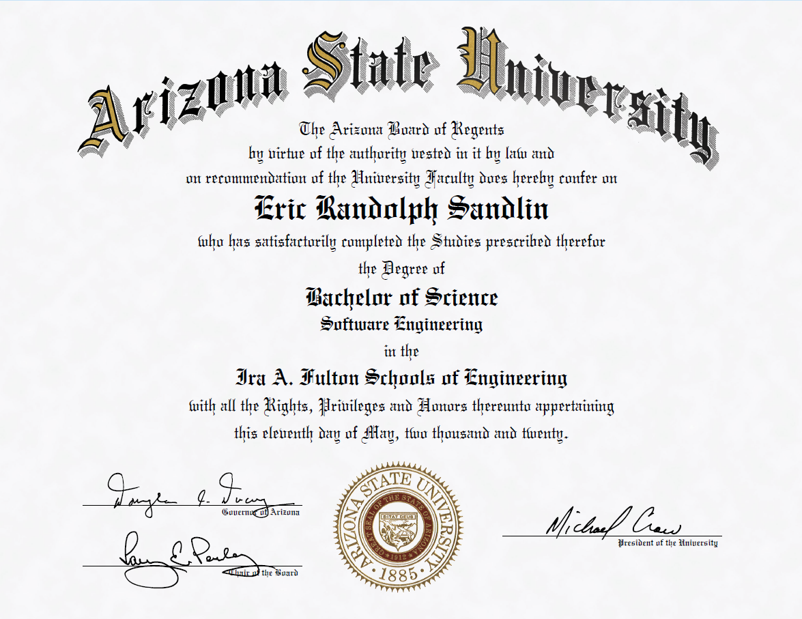
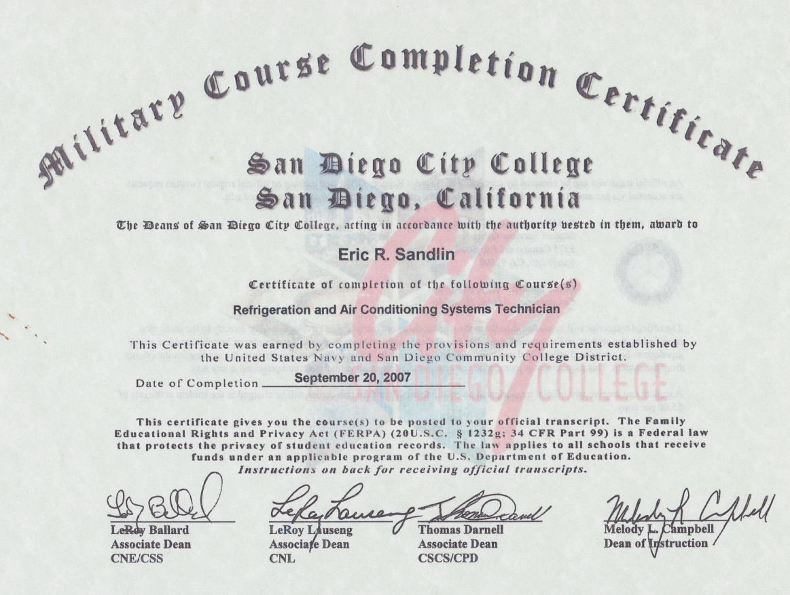
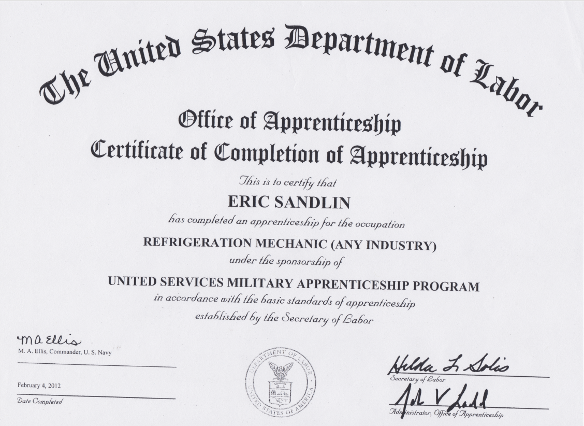
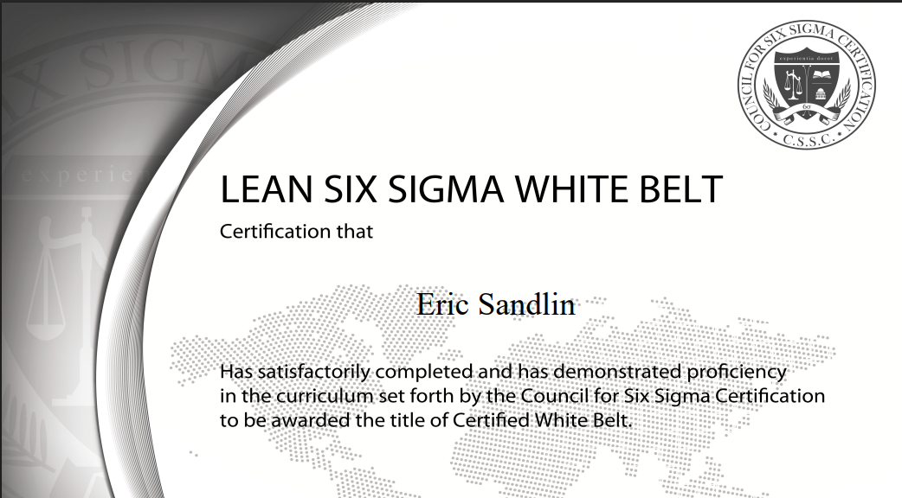
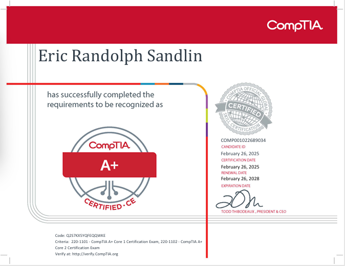

Home
Résumé
Certifications

Arizona State University Degree
Winfield City High School Diploma

HVAC&R Certification

Department of Labor Apprenticeship

Lean Six Sigma ● Black Belt

CompTIA A+ Certification
CompTIA A+ Certification
CSSC Lean Six Sigma Black Belt
Skills
HTML
CSS
JavaScript
C/C++
Java
Python
UI/UX Design
SQL
Engineering
Maintenance
leadership
Allen-Bradley PLC
RSLogix 5000
FactoryTalk
instrumentation
CMMS: SAP
CMMS: eMaint
Infraspeak
technical writing
fabercation
SOP creation
LOTO Safety
lean manufacturing
troubleshooting
electronics
technical training
team supervision
control systems
networking
quality management
communication
analytialc
preventive maintenance
reactive maintenance
predictive maintenance
HVAC&R
pneumatics
hydraulics
Skill Details